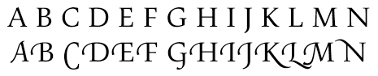

Оформление в WPF
В этом разделе содержатся вводные сведения об основных типографических возможностях WPF. Эти возможности включают в себя повышение качества и производительности отрисовки текста, типографическую поддержку OpenType, расширенный международный текст, улучшенную поддержку шрифтов и новые текстовые API.
Улучшенное качество и производительность работы с текстом
Текст в WPF отрисовывается с помощью Технология Microsoft ClearType, что улучшает четкость и читаемость текста. ClearType — это программная технология, разработанная компанией Microsoft для улучшения удобочитаемости текста на современных ЖК-мониторах (жидкокристаллических дисплеях), например экранах ноутбуков, карманных ПК и плоскопанельных мониторах. ClearType использует Субпиксельная отрисовка, которая позволяет текста, отображаемого с повышенной точностью формы, выравнивая символы до дробной части пикселя. Дополнительное разрешение повышает четкость мелких деталей отображаемого текста, значительно облегчая его длительное чтение. Другим улучшением ClearType в WPF является применение устранения контурных неровностей по направлению оси Y, которое сглаживает неровные края на верхних и нижних частях в текстовых знаках. Дополнительные сведения о возможностях ClearType см. в разделе Общие сведения о технологии ClearType.

Текст со сглаживанием ClearType по оси Y
Весь конвейер отрисовки текста может поддерживать аппаратное ускорение в WPF, позволяя применять компьютер с минимальными требованиями к оборудованию. Отрисовка, которая не может быть выполнена на аппаратном уровне, использует программный рендеринг. Аппаратное ускорение влияет на все этапы конвейера отрисовки текста — от сохранения отдельных глифов, их компоновки в глифы для выполнения, применения эффектов и до применения алгоритма смешивания ClearType для окончательной отрисовки. Дополнительные сведения об аппаратном ускорении см. в разделе Уровни графической отрисовки.
Кроме того, анимированный текст, независимо от того, состоит он их знаков или глифов, использует все преимущества возможностей графического оборудования, работающего под управлением WPF. Это приводит к сглаживанию текстовой анимации.
Типография с широкими возможностями
Формат шрифта OpenType является расширением формата TrueType®. Формат шрифта OpenType был разработан совместно корпорацией Microsoft и Adobe и предоставляет широкий набор дополнительных типографических возможностей. Typography Объект предоставляет многие расширенные возможности OpenType шрифтов, таких как изменение стилей и swash. Windows SDK предоставляет набор образцов шрифтов OpenType, разработанных с широкими возможностями, такие как шрифты Pericles и Pescadero. Дополнительные сведения см. в разделе Пакет образцов шрифтов OpenType.
Шрифт OpenType Pericles содержит дополнительные глифы, поддерживающие изменение стилей для стандартных наборов глифов. Приведенный ниже текст отображает глифы с изменением стиля.
Swash-глифы являются декоративными глифами, которые используют сложную орнаментацию, часто связанную с каллиграфией. Следующий текст отображает стандартные и swash-глифы для шрифта Pescadero.

Дополнительные сведения о возможностях OpenType см. в разделе Возможности шрифта OpenType.
Расширенная многоязыковая поддержка текста
WPF поддерживает расширение международного текста, предоставляя следующие возможности:
Автоматическая расстановка пробелов во всех системах письма с использованием адаптивного измерения.
Широкая поддержка международного текста. Дополнительные сведения см. в разделе Глобализация для WPF.
Управляемый языком разрыв строки, расстановка переносов и выравнивание.
Расширенная поддержка шрифтов
WPF предоставляет расширенную поддержку шрифта, предоставляя следующие возможности:
Юникод для всех текстов. Поведение шрифта и выбор, больше не требующий набора символов или кодовой страницы.
Поведение шрифта зависит от глобальных настроек, таких как язык системы.
Отдельные FontWeight, FontStretch, и FontStyle типов для определения FontFamily. Это обеспечивает большую гибкость, чем в программировании Win32, в котором логические сочетания курсивного и полужирного шрифта используются для определения семейства шрифтов.
Направление письма (горизонтальное или вертикальное) обрабатывается в зависимости от имени шрифта.
Связывание и восстановление шрифта в переносимом файле XML с использованием технологии составного шрифта. Составные шрифты позволяют конструировать все шрифты многоязычного диапазона. Составные шрифты также предоставляют механизм, который позволяет избежать отображения отсутствующих глифов. Дополнительные сведения см. в разделе "Примечания" в FontFamily класса.
Международные шрифты, созданные из составных шрифтов с использованием группы одноязыковых шрифтов. Это позволяет избежать затрат ресурсов при разработке шрифтов для нескольких языков.
Составные шрифты внедряются в документ, тем самым обеспечивая его совместимость. Дополнительные сведения см. в разделе "Примечания" в FontFamily класса.
Новые API
WPF предоставляет несколько текстовых API для разработчиков, которые используются при включении текста в своих приложениях. Эти API сгруппированы в три указанные далее категории.
Макет и пользовательский интерфейс. Общие элементы управления текстом для графический пользовательский интерфейс (GUI).
Облегченное рисование текста. Позволяет рисовать текст непосредственно в объектах.
Дополнительное форматирование текста. Позволяет реализовать пользовательский обработчик текста.
Макет и пользовательский интерфейс
На высшем уровне функциональности текстовые API предоставляют Общие UI элементы управления, например Label, TextBlock, и TextBox. Эти элементы управления предоставляют основные элементы UI в приложении и способ представления текста и взаимодействия с ним. Элементы управления, например RichTextBox и PasswordBox включить более сложных или специализированные обработки текста. И классы, такие как TextRange, TextSelection, и TextPointer предоставляют удобное управление текстом. Эти UI элементы управления предоставляют свойства, такие как FontFamily, FontSize, и FontStyle, позволяющие управлять шрифтами, используемый для отрисовки текста.
Использование эффектов точечных рисунков и текстовых эффектов
WPF позволяет создавать визуально интересные применения текста, используя такие эффекты для точечных рисунков, преобразования и текстовые эффекты возможности. В следующем примере показан типичный эффект тени, примененный к тексту.
В следующем примере показан эффект тени и шума, примененный к тексту.
В следующем примере показан эффект внешнего свечения, примененный к тексту.
В следующем примере показан эффект размытия, примененный к тексту.

В следующем примере показаны вторая строка текста, масштабированная на 150 % вдоль оси X, и третья строка текста, масштабированная на 150 % вдоль оси Y.
В следующем примере показан текст, наклоненный вдоль оси X.

Объект TextEffect объект — это вспомогательный объект, который позволяет обрабатывать текст как одну или несколько групп символов в текстовой строке. В следующем примере показан поворот отдельных символов. Поворот каждого символа осуществляется независимо от других с интервалом в 1 секунду.
Использование документов нефиксированного формата
Помимо общих UI элементов управления, WPF предлагает элемент управления макетом для презентации текста — FlowDocument элемент. FlowDocument Элемент, в сочетании с DocumentViewer элемент предоставляет элемент управления для больших объемов текста с различными требованиями к макету. Элементы управления макета обеспечивают доступ к дополнительным возможностям оформления посредством Typography объекта и свойств, относящихся к шрифту, других UI элементов управления.
В следующем примере показано текстовое содержимое, размещенное в FlowDocumentReader, который предоставляет поиска, переходов, разбиения на страницы и масштабирования содержимого.
Дополнительные сведения см. в разделе Документы в WPF.
Облегченное рисование текста
Можно рисовать текст непосредственно в WPF объектов с помощью DrawText метод DrawingContext объекта. Чтобы использовать этот метод, создайте FormattedText объекта. Этот объект позволяет рисовать многострочный текст, в котором каждый символ в текст можно форматировать отдельно. Функциональные возможности FormattedText объект содержит множество функциональных возможностей флагов DrawText в Windows API. Кроме того FormattedText содержит функциональные возможности, такие как поддержка многоточия, в котором многоточие отображается, когда текст выходит за границы. В следующем примере показан текст, имеющий несколько примененных к нему форматов, в том числе линейный градиент на втором и третьем словах.
Можно преобразовать форматированный текст в Geometry объектов, что позволяет создавать другие типы наглядного текста. Например, можно создать Geometry объект, основанный на контуре строки текста.
В следующих примерах показаны несколько способов создания визуальных эффектов посредством изменения штриха, заливки и выделения преобразованного текста.


Дополнительные сведения о FormattedText объекта, см. в разделе Рисование форматированного текста.
Дополнительное форматирование текста
На наиболее продвинутом уровне текста API, WPF предлагает возможность создания пользовательской разметки текста с помощью TextFormatter объектов и других типов в System.Windows.Media.TextFormatting пространства имен. TextFormatter И связанные классы позволяют реализовать макет пользовательского текста, который поддерживает пользовательское определение формата символов, стили абзаца, правила разрыва строки и другие возможности разметки для международного текста. Существует несколько случаев, когда нужно переопределить реализацию по умолчанию поддержки макета текста WPF. Однако если был создан элемент управления или приложение редактирования текста, может потребоваться реализация, отличная от реализации WPF по умолчанию.
В отличие от традиционного текстового API, TextFormatter взаимодействует с клиентом макета текста через набор методов обратного вызова. Требуется клиент для предоставления этих методов в реализации TextSource класса. Следующая диаграмма иллюстрирует взаимодействие макета текста между клиентским приложением и TextFormatter.

Дополнительные сведения о создании пользовательского макета текста см. в разделе Дополнительное форматирование текста.